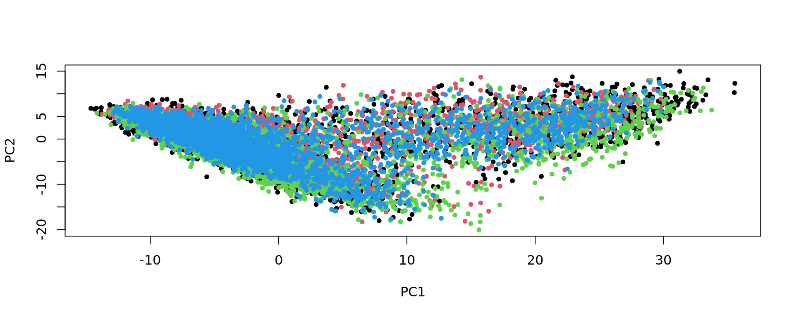
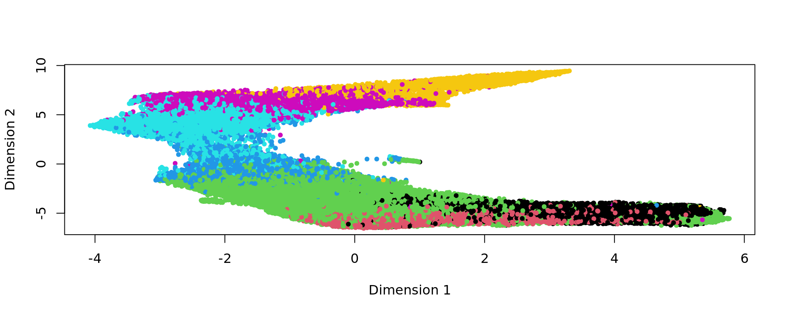
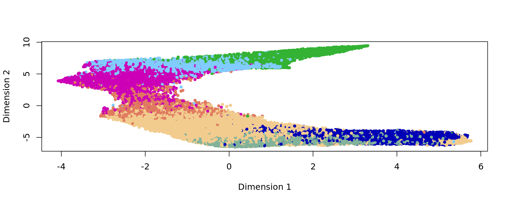
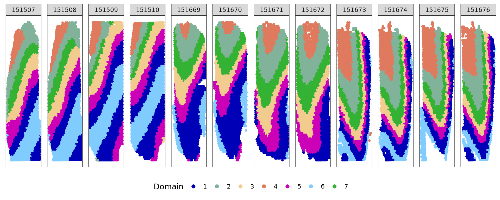
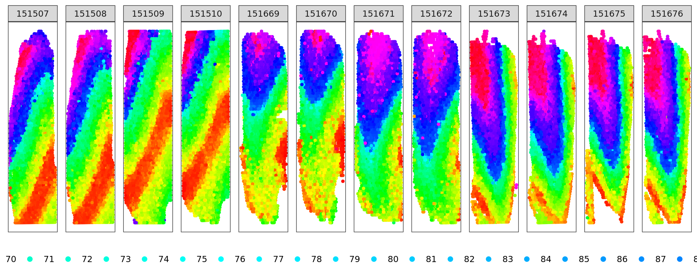

DLPFC
Last updated: 2024-08-05
Checks: 7 0
Knit directory: KODAMA-Analysis/
This reproducible R Markdown analysis was created with workflowr (version 1.7.1). The Checks tab describes the reproducibility checks that were applied when the results were created. The Past versions tab lists the development history.
Great! Since the R Markdown file has been committed to the Git repository, you know the exact version of the code that produced these results.
Great job! The global environment was empty. Objects defined in the global environment can affect the analysis in your R Markdown file in unknown ways. For reproduciblity it’s best to always run the code in an empty environment.
The command set.seed(20240618) was run prior to running
the code in the R Markdown file. Setting a seed ensures that any results
that rely on randomness, e.g. subsampling or permutations, are
reproducible.
Great job! Recording the operating system, R version, and package versions is critical for reproducibility.
Nice! There were no cached chunks for this analysis, so you can be confident that you successfully produced the results during this run.
Great job! Using relative paths to the files within your workflowr project makes it easier to run your code on other machines.
Great! You are using Git for version control. Tracking code development and connecting the code version to the results is critical for reproducibility.
The results in this page were generated with repository version d5e7c3c. See the Past versions tab to see a history of the changes made to the R Markdown and HTML files.
Note that you need to be careful to ensure that all relevant files for
the analysis have been committed to Git prior to generating the results
(you can use wflow_publish or
wflow_git_commit). workflowr only checks the R Markdown
file, but you know if there are other scripts or data files that it
depends on. Below is the status of the Git repository when the results
were generated:
Untracked files:
Untracked: output/DLFPC-All-2-3000-300-0.4.RData
Untracked: output/DLFPC-All.RData
Untracked: output/DLFPC-Br5292-2-3000-300-0.3.RData
Untracked: output/DLFPC-Br5292.RData
Untracked: output/DLFPC-Br5595-2-3000-300-0.3.RData
Untracked: output/DLFPC-Br5595.RData
Untracked: output/DLFPC-Br8100-2-3000-300-0.3.RData
Untracked: output/DLFPC-Br8100.RData
Untracked: output/VisiumHD.RData
Unstaged changes:
Deleted: analysis/DLPFC-12.Rmd
Deleted: analysis/DLPFC-4.Rmd
Deleted: analysis/STARmap.Rmd
Deleted: analysis/figure/DLPFC-12.Rmd/unnamed-chunk-10-1.png
Note that any generated files, e.g. HTML, png, CSS, etc., are not included in this status report because it is ok for generated content to have uncommitted changes.
These are the previous versions of the repository in which changes were
made to the R Markdown (analysis/DLPFC.Rmd) and HTML
(docs/DLPFC.html) files. If you’ve configured a remote Git
repository (see ?wflow_git_remote), click on the hyperlinks
in the table below to view the files as they were in that past version.
| File | Version | Author | Date | Message |
|---|---|---|---|---|
| html | 35ce733 | Stefano Cacciatore | 2024-08-03 | Build site. |
| Rmd | 06f7055 | Stefano Cacciatore | 2024-08-02 | Start my new project |
| Rmd | 7be8f59 | tkcaccia | 2024-07-15 | updates |
| Rmd | f8ca54a | tkcaccia | 2024-07-14 | update |
| html | f8ca54a | tkcaccia | 2024-07-14 | update |
| html | 3ea09a6 | GitHub | 2024-07-08 | Update DLPFC.html |
| html | 93915d8 | GitHub | 2024-07-04 | Update DLPFC.html |
| html | ee4ee17 | GitHub | 2024-06-19 | Add files via upload |
| Rmd | 615fc05 | GitHub | 2024-06-19 | Add files via upload |
Introduction
Here, we apply KODAMA to analyze the human dorsolateral prefrontal cortex (DLPFC) data by 10x Visium from Maynard et al., 2021. The links to download the raw data and H&E full resolution images can be found in the LieberInstitute/spatialLIBD github page.
Loading the required libraries
library("nnSVG")
library("scater")
library("scran")
library("scry")
library("SPARK")
library("harmony")
library("Seurat")
library("spatialLIBD")
library("KODAMA")
library("KODAMAextra")
library("mclust")Download the dataset
spe <- fetch_data(type = 'spe')Extract the metadata information
n.cores=24
sample_names=c("151507",
"151508",
"151509",
"151510",
"151669",
"151670",
"151671",
"151672",
"151673",
"151674",
"151675",
"151676")
subject_names= c("Br5292","Br5595", "Br8100")
metaData = SingleCellExperiment::colData(spe)
expr = SingleCellExperiment::counts(spe)
sample_names <- paste0("sample_", unique(colData(spe)$sample_id))
sample_names <- unique(colData(spe)$sample_id)
dim(spe)[1] 33538 47681Preprocessing
Quality control
We identified mitochondrial genes, calculated per-spot QC metrix and select the QC threshoulds. Low quality spots are discarded.
is_mito <- grepl("(^MT-)|(^mt-)", rowData(spe)$gene_name)
table(is_mito)is_mito
FALSE TRUE
33525 13 spe <- addPerCellQC(spe, subsets = list(mito = is_mito))
# select QC thresholds
qc_lib_size <- colData(spe)$sum < 500
qc_detected <- colData(spe)$detected < 250
qc_mito <- colData(spe)$subsets_mito_percent > 30
qc_cell_count <- colData(spe)$cell_count > 12
discard <- qc_lib_size | qc_detected | qc_mito | qc_cell_count
table(discard)discard
FALSE TRUE
46653 1028 colData(spe)$discard <- discard
spe <- spe[, !colData(spe)$discard]
dim(spe)[1] 33538 46653Horizontalization
The position of spots is corrected to allow to set the slides in the same XY plane.
xy=spatialCoords(spe)
samples=unique(colData(spe)$sample_id)
for(j in 1:length(samples)){
sel=samples[j]==colData(spe)$sample_id
xy[sel,1]=spatialCoords(spe)[sel,1]+12000*(j-1)
}
spatialCoords(spe)=xyGene filtering
spe <- filter_genes(
spe,
filter_genes_ncounts = 2, #ncounts
filter_genes_pcspots = 0.5,
filter_mito = TRUE
)
dim(spe)[1] 6623 46653Spots that are not assigned to any tissue regions are removed from the analysis.
sel= !is.na(colData(spe)$layer_guess_reordered)
spe = spe[,sel]
dim(spe)[1] 6623 46318Normalization
spe <- computeLibraryFactors(spe)
spe <- logNormCounts(spe)Gene selection
The identification of genes that display spatial expression patterns is performed using the SPARKX method (Zhu et al. (2021)). The genes are ranked based on the median value of the logarithm value of the p-value obtained in each slide individually.
pvalue_mat=matrix(nrow=nrow(spe),ncol=length(sample_names))
rownames(pvalue_mat)=rownames(spe)
for(i in 1:length(sample_names)){
sel=colData(spe)$sample_id==sample_names[i]
spe_sub= spe[,sel]
options(warn=-1)
sparkX <- sparkx(logcounts(spe_sub),spatialCoords(spe_sub),numCores=n.cores,option="mixture")
options(warn=0)
pvalue_mat[rownames(sparkX$res_mtest),i]=sparkX$res_mtest$combinedPval
print(sample_names[i])
}
oo=order(apply(pvalue_mat,1,function(x) median(-log(x),na.rm=TRUE)),decreasing = TRUE)
top=rownames(pvalue_mat)[oo]Patient Br5595
subject_names= c(“Br5292”,“Br5595”, “Br8100”)
subject_names="Br5595"
spe_sub <- spe[, colData(spe)$subject == subject_names]
subjects=colData(spe_sub)$subject
dim(spe_sub)[1] 6623 14646 spe_sub <- runPCA(spe_sub, 50,subset_row = top[1:3000], scale=TRUE)
pca=reducedDim(spe_sub,type = "PCA")[,1:50]
labels=as.factor(colData(spe_sub)$layer_guess_reordered)
xy=as.matrix(spatialCoords(spe_sub))
samples=colData(spe_sub)$sample_id
data=t(logcounts(spe_sub)[top[1:3000],])
plot(pca, col=as.factor(colData(spe_sub)$sample_id))
| Version | Author | Date |
|---|---|---|
| 35ce733 | Stefano Cacciatore | 2024-08-03 |
KODAMA analysis
kk=KODAMA.matrix.parallel(pca,
spatial = xy,
FUN= "PLS" ,
landmarks = 100000,
splitting = 300,
f.par.pls = 50,
spatial.resolution = 0.3,
n.cores=n.cores)socket cluster with 24 nodes on host 'localhost'
================================================================================[1] "Finished parallel computation"
[1] "Calculation of dissimilarity matrix..."
================================================================================ print("KODAMA finished")[1] "KODAMA finished" config=umap.defaults
config$n_threads = n.cores
config$n_sgd_threads = "auto"
kk_UMAP=KODAMA.visualization(kk,method="UMAP",config=config)
plot(kk_UMAP,col=as.factor(labels))
Graph-based clustering
# Graph-based clustering
g <- bluster::makeSNNGraph(as.matrix(kk_UMAP), k = 100)
g_walk <- igraph::cluster_walktrap(g)
clu <- as.character(igraph::cut_at(g_walk, no = 5))
plot(kk_UMAP,col=clu,pch=20)
| Version | Author | Date |
|---|---|---|
| 35ce733 | Stefano Cacciatore | 2024-08-03 |
ref=refine_SVM(xy,clu,samples,cost=100)[1] "151669"
[1] "151670"
[1] "151671"
[1] "151672" u=unique(samples)
for(i in 1:length(u)){
sel=samples==u[i]
print(adjustedRandIndex(labels[sel],ref[sel]))
}[1] 0.771931
[1] 0.7658011
[1] 0.8349582
[1] 0.764551 plot(xy,col=ref,pch=20)
| Version | Author | Date |
|---|---|---|
| 35ce733 | Stefano Cacciatore | 2024-08-03 |
Patient Br5292
subject_names="Br5292"
spe_sub <- spe[, colData(spe)$subject == subject_names]
subjects=colData(spe_sub)$subject
dim(spe_sub)[1] 6623 17734 spe_sub <- runPCA(spe_sub, 50,subset_row = top[1:3000], scale=TRUE)
pca=reducedDim(spe_sub,type = "PCA")[,1:50]
labels=as.factor(colData(spe_sub)$layer_guess_reordered)
xy=as.matrix(spatialCoords(spe_sub))
samples=colData(spe_sub)$sample_id
data=t(logcounts(spe_sub)[top[1:3000],])
plot(pca, col=as.factor(colData(spe_sub)$sample_id))
| Version | Author | Date |
|---|---|---|
| 35ce733 | Stefano Cacciatore | 2024-08-03 |
KODAMA analysis
kk=KODAMA.matrix.parallel(pca,
spatial = xy,
FUN= "PLS" ,
landmarks = 100000,
splitting = 300,
f.par.pls = 50,
spatial.resolution = 0.3,
n.cores=n.cores)socket cluster with 24 nodes on host 'localhost'
================================================================================[1] "Finished parallel computation"
[1] "Calculation of dissimilarity matrix..."
================================================================================ print("KODAMA finished")[1] "KODAMA finished" config=umap.defaults
config$n_threads = n.cores
config$n_sgd_threads = "auto"
kk_UMAP=KODAMA.visualization(kk,method="UMAP",config=config)
plot(kk_UMAP,col=as.factor(labels))
| Version | Author | Date |
|---|---|---|
| 35ce733 | Stefano Cacciatore | 2024-08-03 |
Graph-based clustering
g <- bluster::makeSNNGraph(as.matrix(kk_UMAP), k = 100)
g_walk <- igraph::cluster_walktrap(g)
clu <- as.character(igraph::cut_at(g_walk, no = 7))
plot(kk_UMAP,col=clu,pch=20)
| Version | Author | Date |
|---|---|---|
| 35ce733 | Stefano Cacciatore | 2024-08-03 |
ref=refine_SVM(xy,clu,samples,cost=100)[1] "151507"
[1] "151508"
[1] "151509"
[1] "151510" u=unique(samples)
for(i in 1:length(u)){
sel=samples==u[i]
print(adjustedRandIndex(labels[sel],ref[sel]))
}[1] 0.5247771
[1] 0.5724072
[1] 0.5520373
[1] 0.4880365 plot(xy,col=ref,pch=20)
| Version | Author | Date |
|---|---|---|
| 35ce733 | Stefano Cacciatore | 2024-08-03 |
Patient Br8100
subject_names="Br8100"
spe_sub <- spe[, colData(spe)$subject == subject_names]
subjects=colData(spe_sub)$subject
dim(spe_sub)[1] 6623 13938 spe_sub <- runPCA(spe_sub, 50,subset_row = top[1:3000], scale=TRUE)
pca=reducedDim(spe_sub,type = "PCA")[,1:50]
labels=as.factor(colData(spe_sub)$layer_guess_reordered)
xy=as.matrix(spatialCoords(spe_sub))
samples=colData(spe_sub)$sample_id
data=t(logcounts(spe_sub)[top[1:3000],])
plot(pca, col=as.factor(colData(spe_sub)$sample_id))
| Version | Author | Date |
|---|---|---|
| 35ce733 | Stefano Cacciatore | 2024-08-03 |
KODAMA analysis
kk=KODAMA.matrix.parallel(pca,
spatial = xy,
FUN= "PLS" ,
landmarks = 100000,
splitting = 300,
f.par.pls = 50,
spatial.resolution = 0.3,
n.cores=n.cores)socket cluster with 24 nodes on host 'localhost'
================================================================================[1] "Finished parallel computation"
[1] "Calculation of dissimilarity matrix..."
================================================================================ print("KODAMA finished")[1] "KODAMA finished" config=umap.defaults
config$n_threads = n.cores
config$n_sgd_threads = "auto"
kk_UMAP=KODAMA.visualization(kk,method="UMAP",config=config)
plot(kk_UMAP,col=as.factor(labels))
| Version | Author | Date |
|---|---|---|
| 35ce733 | Stefano Cacciatore | 2024-08-03 |
Graph-based clustering
g <- bluster::makeSNNGraph(as.matrix(kk_UMAP), k = 100)
g_walk <- igraph::cluster_walktrap(g)
clu <- as.character(igraph::cut_at(g_walk, no = 7))
plot(kk_UMAP,col=clu,pch=20)
| Version | Author | Date |
|---|---|---|
| 35ce733 | Stefano Cacciatore | 2024-08-03 |
ref=refine_SVM(xy,clu,samples,cost=100)[1] "151673"
[1] "151674"
[1] "151675"
[1] "151676" u=unique(samples)
for(i in 1:length(u)){
sel=samples==u[i]
print(adjustedRandIndex(labels[sel],ref[sel]))
}[1] 0.5826115
[1] 0.6152428
[1] 0.6001898
[1] 0.5634519 plot(xy,col=ref,pch=20)
| Version | Author | Date |
|---|---|---|
| 35ce733 | Stefano Cacciatore | 2024-08-03 |
12 Slides
PCA and HARMONY
data=t(logcounts(spe)[top[1:3000],])
subjects=colData(spe)$subject
dim(spe_sub)[1] 6623 13938 spe <- runPCA(spe, 50,subset_row = top[1:3000], scale=TRUE)
#pca=irlba(scale(data),50)$u
labels=as.factor(colData(spe)$layer_guess_reordered)
xy=as.matrix(spatialCoords(spe))
samples=colData(spe)$sample_id
spe <- RunHarmony(spe, "subject",lambda=NULL)
# pca <- RunHarmony(pca, subjects,lambda=NULL)
pca=reducedDim(spe,type = "HARMONY")[,1:50]
plot(pca)
| Version | Author | Date |
|---|---|---|
| 35ce733 | Stefano Cacciatore | 2024-08-03 |
KODAMA
kk=KODAMA.matrix.parallel(pca,
spatial = xy,
FUN= "PLS" ,
landmarks = 100000,
splitting = 300,
f.par.pls = 50,
spatial.resolution = 0.3,
n.cores=n.cores)socket cluster with 24 nodes on host 'localhost'
================================================================================[1] "Finished parallel computation"
[1] "Calculation of dissimilarity matrix..."
================================================================================ print("KODAMA finished")[1] "KODAMA finished" config=umap.defaults
config$n_threads = n.cores
config$n_sgd_threads = "auto"
kk_UMAP=KODAMA.visualization(kk,method="UMAP",config=config)CLUSTER
library("mclust")
clu=kmeans(kk_UMAP,7,nstart = 100)$cluster
plot(kk_UMAP,col=labels,pch=20)
| Version | Author | Date |
|---|---|---|
| 35ce733 | Stefano Cacciatore | 2024-08-03 |
plot(kk_UMAP,col=clu,pch=20)
| Version | Author | Date |
|---|---|---|
| 35ce733 | Stefano Cacciatore | 2024-08-03 |
plot(xy,col=clu,pch=20)
| Version | Author | Date |
|---|---|---|
| 35ce733 | Stefano Cacciatore | 2024-08-03 |
u=unique(samples)
for(i in 1:length(u)){
sel=samples==u[i]
print(adjustedRandIndex(labels[sel],clu[sel]))
}[1] 0.5207379
[1] 0.4744448
[1] 0.4842224
[1] 0.4732519
[1] 0.3175966
[1] 0.296884
[1] 0.3866092
[1] 0.4106501
[1] 0.5470543
[1] 0.5638721
[1] 0.5334404
[1] 0.5264859ref=refine_SVM(xy,clu,samples,cost=100)[1] "151507"
[1] "151508"
[1] "151509"
[1] "151510"
[1] "151669"
[1] "151670"
[1] "151671"
[1] "151672"
[1] "151673"
[1] "151674"
[1] "151675"
[1] "151676"u=unique(samples)
for(i in 1:length(u)){
sel=samples==u[i]
print(adjustedRandIndex(labels[sel],ref[sel]))
}[1] 0.5570224
[1] 0.5025889
[1] 0.496369
[1] 0.5067732
[1] 0.3605684
[1] 0.3355268
[1] 0.4476559
[1] 0.5404574
[1] 0.6005861
[1] 0.6239892
[1] 0.5944963
[1] 0.5836213plot(xy,col=ref,pch=20)
| Version | Author | Date |
|---|---|---|
| 35ce733 | Stefano Cacciatore | 2024-08-03 |
TRAJECTORY
library("slingshot")
d <- slingshot(kk_UMAP, clusterLabels = clu)
trajectory=d@metadata$curves$Lineage1$s
k=knn_Armadillo(trajectory,kk_UMAP,1)
map_color=rainbow(nrow(trajectory))[k$nn_index]
plot(kk_UMAP,col=map_color)
| Version | Author | Date |
|---|---|---|
| 35ce733 | Stefano Cacciatore | 2024-08-03 |
plot(xy,col=map_color)
| Version | Author | Date |
|---|---|---|
| 35ce733 | Stefano Cacciatore | 2024-08-03 |
sessionInfo()R version 4.4.1 (2024-06-14)
Platform: x86_64-pc-linux-gnu
Running under: Ubuntu 20.04.6 LTS
Matrix products: default
BLAS: /usr/lib/x86_64-linux-gnu/blas/libblas.so.3.9.0
LAPACK: /usr/lib/x86_64-linux-gnu/lapack/liblapack.so.3.9.0
locale:
[1] LC_CTYPE=en_US.UTF-8 LC_NUMERIC=C
[3] LC_TIME=en_US.UTF-8 LC_COLLATE=en_US.UTF-8
[5] LC_MONETARY=en_US.UTF-8 LC_MESSAGES=en_US.UTF-8
[7] LC_PAPER=en_US.UTF-8 LC_NAME=C
[9] LC_ADDRESS=C LC_TELEPHONE=C
[11] LC_MEASUREMENT=en_US.UTF-8 LC_IDENTIFICATION=C
time zone: Etc/UTC
tzcode source: system (glibc)
attached base packages:
[1] parallel stats4 stats graphics grDevices utils datasets
[8] methods base
other attached packages:
[1] slingshot_2.12.0 TrajectoryUtils_1.12.0
[3] princurve_2.1.6 mclust_6.1.1
[5] KODAMAextra_1.0 e1071_1.7-14
[7] doParallel_1.0.17 iterators_1.0.14
[9] foreach_1.5.2 KODAMA_3.1
[11] umap_0.2.10.0 Rtsne_0.17
[13] minerva_1.5.10 spatialLIBD_1.16.2
[15] SpatialExperiment_1.14.0 Seurat_5.1.0
[17] SeuratObject_5.0.2 sp_2.1-4
[19] harmony_1.2.0 Rcpp_1.0.12
[21] SPARK_1.1.1 scry_1.16.0
[23] scran_1.32.0 scater_1.32.1
[25] ggplot2_3.5.1 scuttle_1.14.0
[27] SingleCellExperiment_1.26.0 SummarizedExperiment_1.34.0
[29] Biobase_2.64.0 GenomicRanges_1.56.1
[31] GenomeInfoDb_1.40.1 IRanges_2.38.1
[33] S4Vectors_0.42.1 BiocGenerics_0.50.0
[35] MatrixGenerics_1.16.0 matrixStats_1.3.0
[37] nnSVG_1.8.0 workflowr_1.7.1
loaded via a namespace (and not attached):
[1] goftest_1.2-3 DT_0.33
[3] Biostrings_2.72.1 vctrs_0.6.5
[5] spatstat.random_3.3-1 digest_0.6.36
[7] png_0.1-8 proxy_0.4-27
[9] git2r_0.33.0 ggrepel_0.9.5
[11] deldir_2.0-4 parallelly_1.38.0
[13] magick_2.8.4 MASS_7.3-61
[15] reshape2_1.4.4 httpuv_1.6.15
[17] withr_3.0.0 xfun_0.45
[19] survival_3.7-0 memoise_2.0.1
[21] benchmarkme_1.0.8 ggbeeswarm_0.7.2
[23] zoo_1.8-12 pbapply_1.7-2
[25] rematch2_2.1.2 KEGGREST_1.44.1
[27] promises_1.3.0 httr_1.4.7
[29] restfulr_0.0.15 globals_0.16.3
[31] fitdistrplus_1.2-1 ps_1.7.7
[33] rstudioapi_0.16.0 UCSC.utils_1.0.0
[35] miniUI_0.1.1.1 generics_0.1.3
[37] processx_3.8.4 curl_5.2.1
[39] fields_16.2 zlibbioc_1.50.0
[41] ScaledMatrix_1.12.0 polyclip_1.10-7
[43] doSNOW_1.0.20 GenomeInfoDbData_1.2.12
[45] ExperimentHub_2.12.0 SparseArray_1.4.8
[47] golem_0.4.1 xtable_1.8-4
[49] stringr_1.5.1 pracma_2.4.4
[51] evaluate_0.24.0 S4Arrays_1.4.1
[53] BiocFileCache_2.12.0 irlba_2.3.5.1
[55] colorspace_2.1-0 filelock_1.0.3
[57] ROCR_1.0-11 reticulate_1.38.0
[59] spatstat.data_3.1-2 shinyWidgets_0.8.6
[61] magrittr_2.0.3 lmtest_0.9-40
[63] later_1.3.2 viridis_0.6.5
[65] lattice_0.22-6 spatstat.geom_3.3-2
[67] future.apply_1.11.2 getPass_0.2-4
[69] scattermore_1.2 XML_3.99-0.17
[71] cowplot_1.1.3 RcppAnnoy_0.0.22
[73] class_7.3-22 pillar_1.9.0
[75] nlme_3.1-165 compiler_4.4.1
[77] beachmat_2.20.0 RSpectra_0.16-1
[79] stringi_1.8.4 tensor_1.5
[81] GenomicAlignments_1.40.0 plyr_1.8.9
[83] crayon_1.5.3 abind_1.4-5
[85] BiocIO_1.14.0 locfit_1.5-9.10
[87] bit_4.0.5 dplyr_1.1.4
[89] whisker_0.4.1 codetools_0.2-20
[91] BiocSingular_1.20.0 openssl_2.2.0
[93] bslib_0.7.0 paletteer_1.6.0
[95] plotly_4.10.4 mime_0.12
[97] splines_4.4.1 fastDummies_1.7.3
[99] dbplyr_2.5.0 sparseMatrixStats_1.16.0
[101] attempt_0.3.1 knitr_1.48
[103] blob_1.2.4 utf8_1.2.4
[105] BiocVersion_3.19.1 fs_1.6.4
[107] listenv_0.9.1 DelayedMatrixStats_1.26.0
[109] rdist_0.0.5 tibble_3.2.1
[111] Matrix_1.7-0 callr_3.7.6
[113] statmod_1.5.0 pkgconfig_2.0.3
[115] tools_4.4.1 BRISC_1.0.5
[117] cachem_1.1.0 RhpcBLASctl_0.23-42
[119] RSQLite_2.3.7 viridisLite_0.4.2
[121] DBI_1.2.3 fastmap_1.2.0
[123] rmarkdown_2.27 scales_1.3.0
[125] grid_4.4.1 ica_1.0-3
[127] Rsamtools_2.20.0 AnnotationHub_3.12.0
[129] sass_0.4.9 patchwork_1.2.0
[131] BiocManager_1.30.23 dotCall64_1.1-1
[133] RANN_2.6.1 snow_0.4-4
[135] yaml_2.3.9 rtracklayer_1.64.0
[137] cli_3.6.3 purrr_1.0.2
[139] leiden_0.4.3.1 lifecycle_1.0.4
[141] askpass_1.2.0 uwot_0.2.2
[143] bluster_1.14.0 sessioninfo_1.2.2
[145] BiocParallel_1.38.0 gtable_0.3.5
[147] rjson_0.2.21 ggridges_0.5.6
[149] progressr_0.14.0 limma_3.60.3
[151] jsonlite_1.8.8 edgeR_4.2.1
[153] RcppHNSW_0.6.0 bitops_1.0-8
[155] benchmarkmeData_1.0.4 bit64_4.0.5
[157] spatstat.utils_3.0-5 BiocNeighbors_1.22.0
[159] matlab_1.0.4.1 jquerylib_0.1.4
[161] highr_0.11 metapod_1.12.0
[163] config_0.3.2 dqrng_0.4.1
[165] spatstat.univar_3.0-0 lazyeval_0.2.2
[167] shiny_1.9.1 htmltools_0.5.8.1
[169] sctransform_0.4.1 rappdirs_0.3.3
[171] glue_1.7.0 spam_2.10-0
[173] XVector_0.44.0 RCurl_1.98-1.16
[175] rprojroot_2.0.4 gridExtra_2.3
[177] igraph_2.0.3 R6_2.5.1
[179] tidyr_1.3.1 CompQuadForm_1.4.3
[181] cluster_2.1.6 DelayedArray_0.30.1
[183] tidyselect_1.2.1 vipor_0.4.7
[185] maps_3.4.2 AnnotationDbi_1.66.0
[187] future_1.34.0 rsvd_1.0.5
[189] munsell_0.5.1 KernSmooth_2.23-24
[191] data.table_1.15.4 htmlwidgets_1.6.4
[193] RColorBrewer_1.1-3 rlang_1.1.4
[195] spatstat.sparse_3.1-0 spatstat.explore_3.3-1
[197] fansi_1.0.6 beeswarm_0.4.0